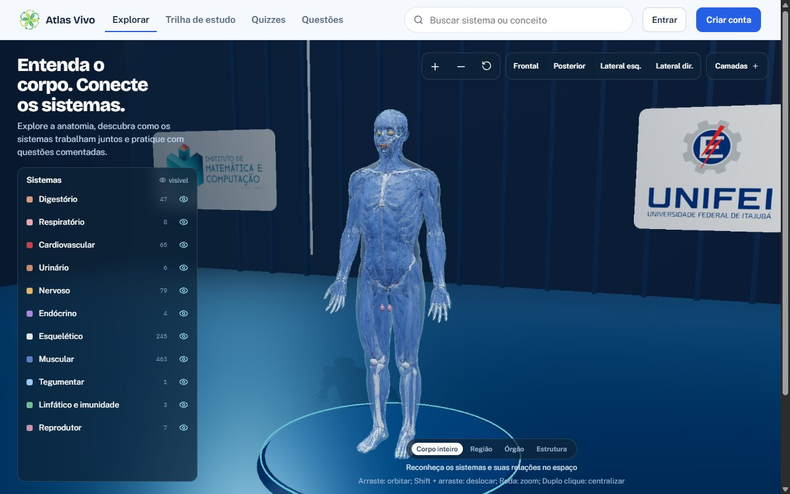
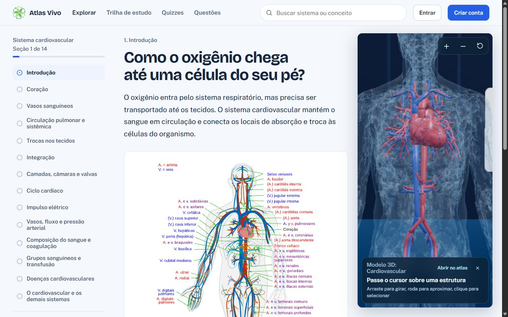
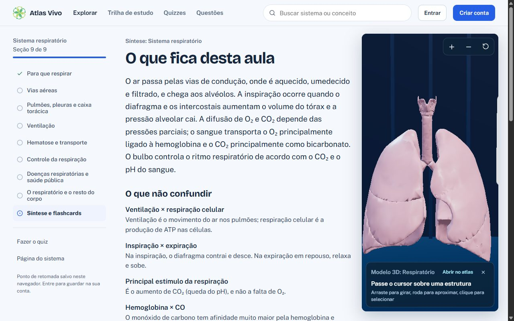
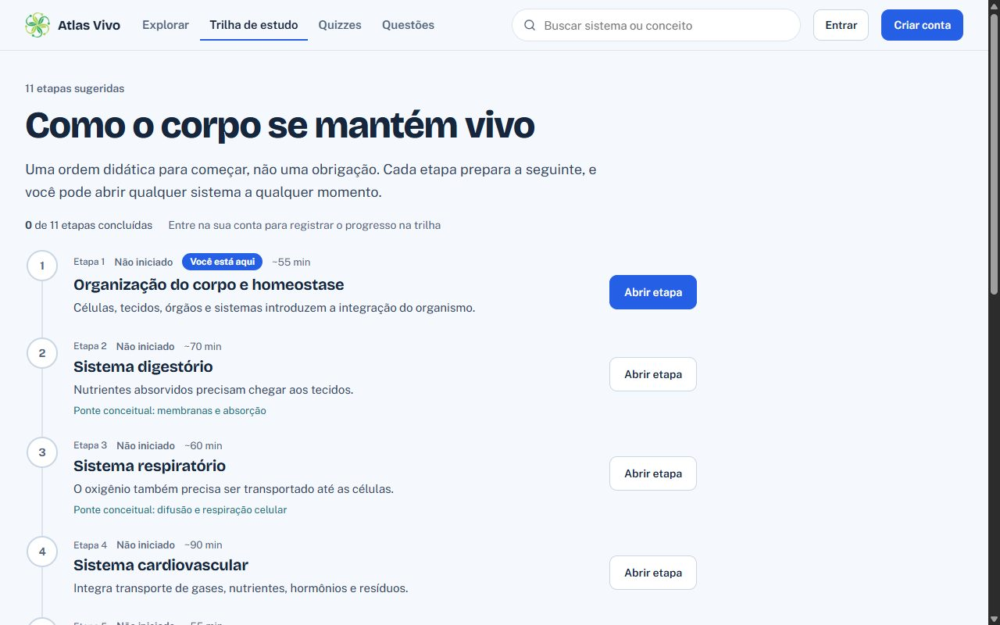

Atlas 3D do corpo humano
Anatomia não é para decorar.
Explore o corpo. Conecte os sistemas. Aprenda de verdade.
Explore a anatomia humana em 3D, conecte estruturas e sistemas e teste o que você aprendeu.
- Estruturas no modelo
- 931estruturas
- Sistemas
- 11sistemas
- Aulas
- 13aulas
Seu corpo não é uma coleção de peças.
No Atlas Vivo, você explora estruturas, entende os sistemas e descobre como eles se relacionam.
- Respiratório→CardiovascularO₂ entra no sangue nos alvéolos.
- Digestório→CardiovascularNutrientes absorvidos no intestino seguem pelo sangue.
- Nervoso→RespiratórioO bulbo controla o ritmo da ventilação.
- Cardiovascular→NervosoO encéfalo depende de O₂ e glicose trazidos pelo sangue.
- Nervoso→DigestórioNervos controlam os movimentos e as secreções da digestão.
Corpo inteiro931 estruturas
Explore de verdade.
Entre no corpo humano e descubra o que existe por trás de cada estrutura.
-
Visão geral
Do corpo inteiro…
Onze sistemas sobrepostos, com pele, músculos e ossos. Gire, aproxime e selecione qualquer estrutura.
-
Sistema nervoso
…ao centro de comando.
Isole um sistema e o resto do corpo recua. O encéfalo aparece sozinho, pronto para ser examinado de perto.
-
Cardiovascular
Chegue perto do coração.
Câmaras, valvas e grandes vasos no lugar onde estão, ligados ao resto da circulação.
-
Respiratório
Siga o ar até os pulmões.
Da traqueia aos brônquios: as estruturas que levam o O₂ até onde o sangue o recolhe.
-
Digestório
E veja onde o alimento vira nutriente.
Cada termo das aulas destaca a estrutura no modelo, e cada estrutura traz o trecho da aula sobre ela.
Abrir o atlas completo
Do primeiro contato à prova.
O modelo é o começo. Em volta dele há aulas, revisão, quizzes comentados e questões de vestibular, em uma ordem que faz sentido.




Atlas 3D
Comece pelo corpo, não pelo texto.
931 estruturas do BodyParts3D, em camadas por sistema, com busca e seleção.
Estude.Acerte.Evolua.
Perfil de exemplo
- Primeiro passoResponder à primeira questão
- Leitura em diaConcluir a primeira aula
- Na moscaAcertar todas as questões de um quiz
Questão básica certa vale 10 XP, intermediária 15. Quiz completo rende mais 20 e cada aula concluída, 30.
Seu estudo tem um caminho.
Onze etapas em ordem didática, cada uma preparando a seguinte. Você sabe onde parou e o que vem depois.
Ver a trilha completaEtapa 2 de 11Sistema Digestório
- Anatomia básica, concluída
- Órgãos, concluída
- Fisiologia, em andamento
- Questões, a fazer
- Revisão, a fazer
Não só mostra. Pergunta.
Responda e veja na hora o gabarito, a explicação e o porquê de cada alternativa. Esta é uma questão do quiz do sistema respiratório.
Pronto para enxergar o corpo de outro jeito?
Comece gratuitamente.